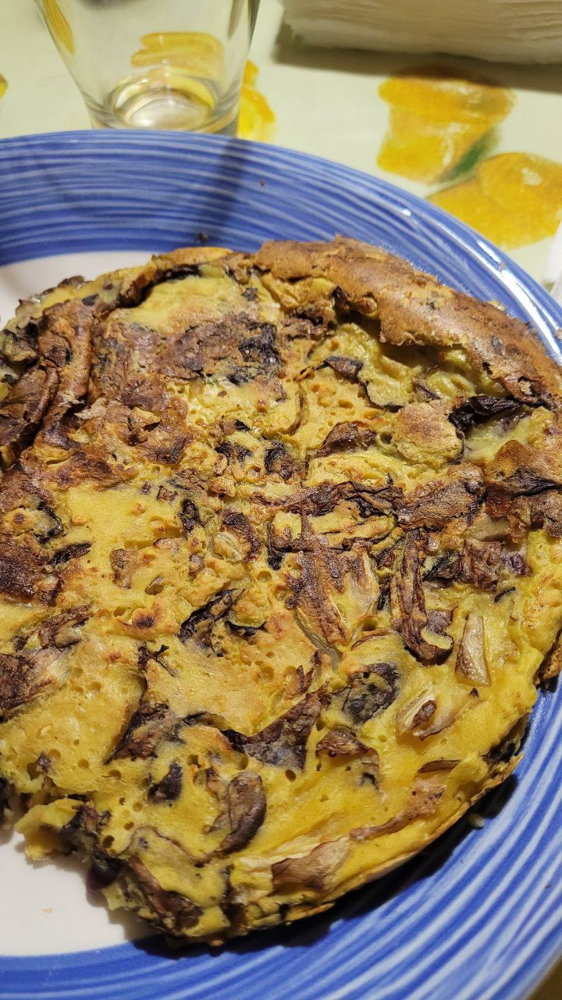

Ingredienti
- 50 g farina di ceci
- 1 radicchio piccolo
- 5 g lievito alimentare
- curcuma
- paprika
- sale, pepe
- olio d'oliva
- Farina di mais (opzionale)
Difficoltà:
FacileStrumenti
- padella antiaderente
- tagliere
Tempo:
30 minutiProcedimento
- Per prima cosa tagliare il radicchio e lasciarlo cuocere a fiamma bassa nella padella con abbondante olio
- Mentre il radicchio si sta appassendo preparare la pastella mischiando tutte le polveri: farina, lievito alimantare, sale e spezie a piacimento
- Aggungere 60 g di acqua a temperatura e mescolare bene cercando di non lasciare grumi
- Amalgamare il radicchio cotto con la pastella e versare tutto nella padella, se necessario aiutarsi con una forchetta per stendere uniformemente la frittata
- Per renderla più croccante, cospargere la parte superiore della frittata con un pugno di farina di mais. Coprire e lasciare cuocere a fuoco lento
- Girare la frittata dopo una decina di minuti
Grazie, grazie mille Alan ti ringrazio ancora di avermi fatto scoprire questa ricetta sono andato nel bosco proprio dove mi hai consigliato te!!!!! Sto benissimo
Buonissima!